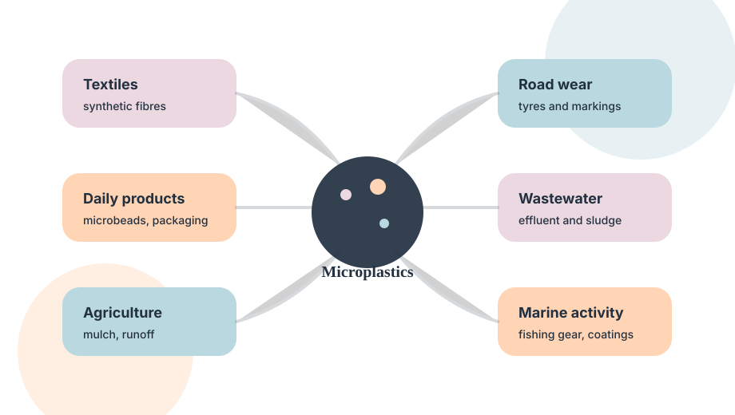
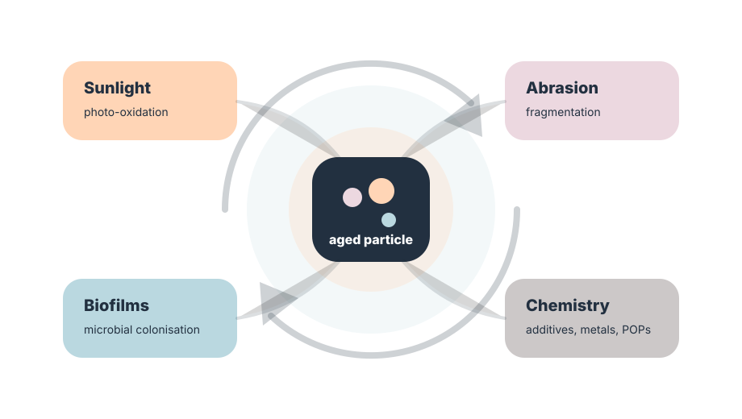
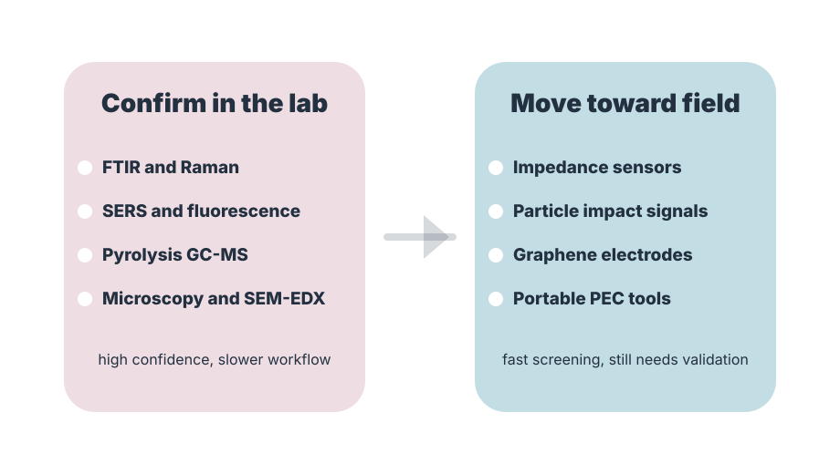
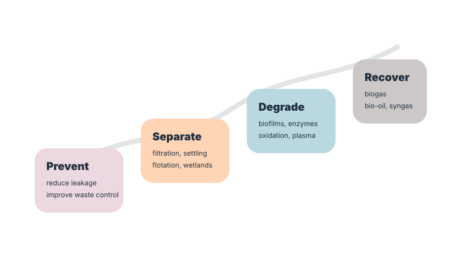

Microplastics are often described as tiny plastic particles, but that simple definition hides a much larger story.
They are not only pieces of waste. They are moving particles, chemical surfaces, carriers of additives, possible exposure agents, and signals that need to be measured carefully. The two review papers used for this article point to one main lesson: microplastic pollution has to be understood as a chain. It begins with production and daily use, continues through environmental breakdown and transport, reaches living organisms through exposure pathways, and finally demands better detection and treatment systems.
This article does not repeat the paper titles and author lists as a publication card. Instead, it translates the main scientific ideas into a readable web article for students, researchers, and interested readers who want to understand the bigger picture.
Microplastics begin as a design, use and waste problem.
Most microplastics enter the environment through ordinary human systems. Some are manufactured directly at small size, such as plastic pellets, microbeads and industrial abrasives. Others are created when larger plastics break down into smaller fragments through weathering, sunlight, friction and physical stress.
The source list is broad. Synthetic textiles release fibres during washing. Tyres and road markings generate abrasion particles. Packaging, bottles, agricultural mulch, sewage sludge, personal care products, fishing gear and marine coatings can all contribute to the microplastic load. Once released, these particles move through wastewater, runoff, rivers, soil, air and marine systems.

The environment does not keep microplastics unchanged.
After release, microplastics continue to change. Sunlight can trigger photo-oxidation. Waves, road wear and sediment movement can fragment particles. Oxygen, pH, temperature and chemical exposure can alter surfaces. Microorganisms can colonise plastic surfaces and form biofilms, which may change buoyancy, surface charge, hydrophobicity and interaction with other pollutants.
This ageing process matters because a fresh plastic particle and a weathered particle may not behave in the same way. Weathered surfaces may adsorb metals, organic pollutants or biological material. Smaller particles may travel farther, become more difficult to detect, and may have different biological interaction potential.

Health risk is linked to exposure, particle properties and uncertainty.
Microplastics can reach humans through ingestion, inhalation and, in some situations, contact with contaminated products or environments. The reviewed literature discusses evidence of microplastics in food, water and biological samples, while also showing that health interpretation remains complex. Particle size, shape, polymer type, additives, surface ageing and adsorbed contaminants can all influence potential effects.
The most responsible message is not to overstate certainty. The concern is serious, but risk assessment still needs better exposure data, standard particle reporting, and stronger links between measured particles and biological outcomes.
Detection is moving from visual counting to smarter sensing.
Microplastic analysis has traditionally depended on visual inspection, microscopy, FTIR, Raman spectroscopy, SERS, pyrolysis GC-MS, thermal analysis, staining methods and related confirmatory techniques. These methods are valuable because they can identify polymer types and help avoid false counting of non-plastic particles.
At the same time, the field is looking for faster and more portable methods. Electrochemical approaches are promising because many plastics are electrically insulating and can disturb current, resistance or impedance when interacting with an electrode or sensor surface. Graphene electrodes, impedance spectroscopy, particle-impact electrochemistry, peptide-assisted sensing and photoelectrochemical designs show how future monitoring may become faster and closer to field conditions.

The response must move from removal to recovery.
Treatment is not only about collecting particles after contamination has happened. It should begin with source reduction and better waste management. After that, wastewater treatment, sedimentation, membrane filtration, dissolved air flotation, adsorption, constructed wetlands and sludge treatment can help intercept particles before they move farther into the environment.
The reviewed papers also discuss biological and thermochemical routes, including algal or microbial degradation, anaerobic digestion, thermal hydrolysis, hydrothermal liquefaction, pyrolysis, gasification, plasma arc gasification and catalytic cracking. These approaches are not magic solutions, but they show a useful direction: future systems may combine pollution control with energy or material recovery.

Microplastics should be studied as particles, pollutants, signals and recovery targets.
The strongest message from the two papers is that microplastic research is becoming more connected. Detection without understanding sources is incomplete. Health discussion without reliable particle measurement is weak. Treatment without source control is expensive. Recovery without safety assessment is risky.
A better future pathway will link careful sampling, validated detection, exposure-aware health research, low-cost monitoring, treatment design and circular economy thinking. That is the purpose of this website: to turn scattered scientific knowledge into a clear, useful and growing knowledge space.
Research base used
This article was developed from two recent review papers on microplastic sources, fate, degradation, health relevance, analytical identification, electrochemical sensing and recovery options. The article is written as a synthesis, not as a paper-by-paper summary.